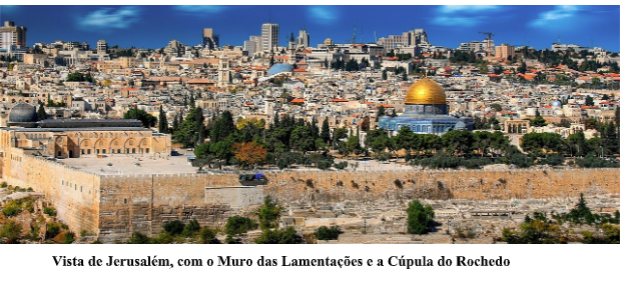
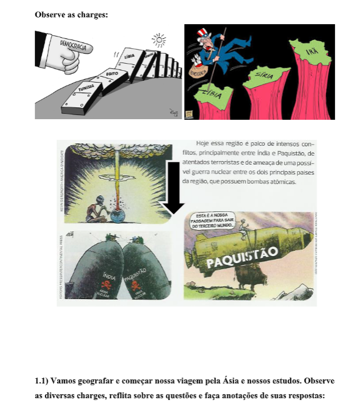

Ásia: diversidade física humana e econômica.
Questão:A Ásia é o maior continente do planeta. Seus mais de 44 milhões de km² estendem- se desde o cabo Chelyuskin ao norte, na Sibéria, até a península da Malásia, no sul; e desde o cabo Deznev, no estreito de Bering, até o cabo Baba da Turquia, a oeste. Limita-se ao norte com o oceano Glacial Ártico, a leste com o mar de Bering e o oceano Pacífico, ao sul com o oceano Índico e a oeste com os montes Urais e os mares Cáspio, Negro e Mediterrâneo, que separam a Ásia da Europa. O mar Vermelho e o canal de Suez fazem a fronteira com a África. Qual a diversidade de paisagens e de seres humanos nesse imenso continente?
Contextualizando – Indústria Têxtil Brasileira e relação com a ÁsiaO futuro da indústria têxtil brasileira está na Ásia e no Oriente Médio. A afirmação é do diretor-superintendente da Associação Brasileira da Indústria Têxtil e de Confecção (Abit), Fernando Pimentel, que aposta, no longo prazo, nos mercados não tradicionais para aumentar as vendas externas do setor, que apresentaram queda de 37% nos cinco primeiros meses do ano em relação ao mesmo período de 2008, segundo dados divulgados em entrevista coletiva. De janeiro a maio, as exportações brasileiras do setor têxtil renderam US$ 465 milhões, contra US$ 740 milhões do mesmo período no ano passado. A queda das exportações foi maior do que a das importações, que passaram de US$ 1,5 bilhão para US$ 1,26 bilhão na mesma comparação. “Essa queda foi superior a das importações porque o nosso principal mercado, a Argentina, colocou uma série de barreiras para a entrada de produtos estrangeiros, e o segundo maior mercado, os Estados Unidos, sofreram um baque tremendo em termos de consumo”, afirmou Pimentel. De acordo com ele, isso faz com que a indústria têxtil comece a diversificar seus mercados. “Sem dúvida nenhuma o mercado árabe é um mercado importante para o Brasil e que está no radar das ações estratégicas da Apex junto ao programa TexBrasil, no âmbito do desenvolvimento da moda brasileira”, disse o diretor. Ele afirmou ainda que já existem muitas empresas brasileiras participando de eventos no Oriente Médio, “seja porque a região é um hub, que de lá vai para outros mercados, ou seja porque tem um mercado local que puxa a demanda”.
Fonte: https://anba.com.br/futuro-da-industria-textil-esta-no-oriente-medio-e-asia/
Por que o relevo asiático é instável?
Ilhas e penínsulasÀs margens das costas asiáticas há um sem-número de pequenas e grandes ilhas, como Sri Lanka e Bornéu, e arquipélagos como os do Japão, Filipinas, Indonésia, Molucas ou sudoeste da Ásia. Além disso, nas costas asiáticas recortam-se grandes penínsulas como as da Coréia, da Indochina, da Índia (com o golfo de Bengala), a Arábica (com o golfo de Áden e o golfo Pérsico) e a da Ásia Menor. A maior parte das terras asiáticas está entre o Trópico de Câncer e o Círculo Polar Ártico. As diferenças de altitude e de latitude podem explicar os grandes contrastes de paisagens na Ásia.
Paisagens naturaisAs paisagens asiáticas formam um painel complexo de diferentes fisionomias. Englobam desde as mais altas montanhas do mundo, na cordilheira do Himalaia, até vastas planícies na Sibéria Ocidental, entre os montes Urais e o Rio Yeniséi, com sua vegetação de estepes. Os grandes vales férteis dos rios asiáticos propiciam uma paisagem altamente aproveitada pela atividade agrícola.
Áreas férteisA planície aluvial da Mesopotâmia, banhada pelos rios Eufrates e Tigre, é uma região rica e fértil. A região de Bengala é uma vasta planície tropical, na qual a desembocadura dos rios Brahmaputra, Ganges, Meghna e Tista constitui o maior delta do mundo. Os arquipélagos da Indonésia compõem belas paisagens equatoriais, com grande atividade vulcânica.
Áreas desérticasA paisagem desértica ocupa quatro grandes extensões na Ásia: o planalto de Gobi, na Ásia Central, que forma um dos maiores desertos do mundo, com mais de 1 milhão de km²; e a seguir o deserto chinês de Takla Makan, o Arábico e o de Thar, entre o Paquistão e a Índia. A região plana de Karakumy, no Turcomenistão, apresenta uma extensão semidesértica de pedras e areias negras.
Relevo e hidrografiaO relevo da Ásia é marcado pela instabilidade, pois nesse continente estão as diversas linhas de contato entre as placas tectônicas, onde ocorrem os abalos sísmicos e as atividades vulcânicas. Encontramos dobramentos modernos, planaltos antigos e planícies de sedimentação fluvial.
Montanhas e planaltosNa região central destacam-se uma zona de planaltos e outra de cordilheiras. Entre as montanhas está a cordilheira do Himalaia, onde se localiza o monte Everest, de 8.848 m, o mais alto do mundo. Junto ao Himalaia, estende-se a área conhecida como telhado do mundo', com mais de 6.000 m de altitude, abrangendo os planaltos de Pamir e Tibete. Existem outros planaltos mais antigos, como o da Arábia e o do Decão.
PlaníciesAs planícies estão ligadas às bacias hidrográficas. A planície da Mesopotâmia (rios Tigre e Eufrates) fica no Iraque; a planície Indo-Gangética (rios Indo e Ganges) ocupa o norte da Índia; a planície da China é atravessada pelos rios Huang-Ho e Tang-Tsé Kiang; o rio Amur atravessa a planície da Manchúria e os rios Ob, Lena e Ienessei percorrem a planície da Sibéria.
Para lembrar:A Ásia possui também grandes lagos, que formam bacias hidrográficas fechadas. Os mais importantes são o mar Cáspio (o maior lago salgado do mundo), o mar de Aral, o Baikal e o Morto.
Clima e vegetaçãoAlguns fatores explicam a variedade de climas e de vegetação do continente asiático: a posição geográfica (quase todo território na Zona Temperada do Norte), a disposição do relevo que dificulta a circulação das massas de ar, e as altas altitudes do relevo.
Conflitos e PopulaçãoA Ásia concentra alguns dos principais conflitos da atualidade, motivados por divergências étnicas milenares, conflitos pós-colonialistas, divisões religiosas e ideológicas, disputas por fronteiras e movimentos separatistas. Há décadas a Índia e o Paquistão brigam pela Caxemira; cansado de opressão, os tâmeis lutam pela independência no Sri Lanka; a divisão coreana entre Norte e Sul é fonte de tensão permanente; há anos o governo nepalês e a guerrilha maoísta se enfrentam; a tensão étnico-religiosa e os movimentos separatistas marcam todo o Arquipélago Indonésio.
No Oriente Médio, os conflitos que se sucedem desde a fundação de Israel, opondo judeus, palestinos e seus vizinhos árabes, até a ocupação do Afeganistão e Iraque pelas forças militares lideradas pelos Estados Unidos, fazem da região uma das mais instáveis do mundo.
População
A alta densidade demográfica das cidades japonesas provoca a superlotação dos trens metropolitanos, exigindo funcionários para compactar os passageiros nos vagões O continente asiático é o mais extenso e povoado do mundo. Possui uma área total de 44.472.097 km², cerca de 30% da área total do planeta, e 3.905.000.000 habitantes, mais da metade da população terrestre. Com um terço da população do continente, a China é o país mais populoso (1,3 bilhões de habitantes), seguido pela Índia, que também já ultrapassou 1 bilhão de habitantes, a Indonésia, o Paquistão e o Japão – todos países muito populosos. A mortalidade infantil do continente, concentrada nos países pobres do sudeste, só é inferior à africana, mas é compensada pela alta natalidade.
Crescimento em quedaApesar de manter-se alta na maioria dos países, o crescimento demográfico asiático tem caído desde os anos 1970. A população cresce cada vez mais devagar, especialmente nos países desenvolvidos, seguindo o processo de transição demográfica mundial. Hoje, a taxa média de crescimento anual no continente é de cerca de 1,2%, semelhante à da Oceania. A população distribui-se irregularmente, principalmente pela existência de vastas áreas inóspitas, dominadas pelo frio, desertos ou altas montanhas. As áreas mais povoadas estão nas planícies irrigadas por grandes rios e nas áreas urbanizadas. O Oriente Médio e o Sudeste Asiático são as regiões com maior crescimento populacional. Fonte Bibliografica: Coc educação/2011 e Carvalho, Denise Material complementar da disciplina de Regiões 3.PUC/2007.
1) Atividades propostas para reflexão e ação.O Sul da Ásia, também conhecido como “subcontinente indiano “por causa da enorme importância da Índia nessa região”. Todo esse conjunto regional, como também Afeganistão (situado a oeste, no Oriente Médio), dos séculos XV até inicios do XX,era conhecido pelos europeus como” as índias”, um imensa região asiática tida como riquíssima pela presença pela presença de especiarias, seda, diamantes e outras riquezas almejadas pelos europeus.
a) Que mensagens as charges transmitem?
b) Em sua opinião, por que países pobres como índia e o Paquistão investem em armas nucleares?
c) Que outros assuntos sobre o Sul Ásia você acha que vai estudar?
-> Conflitos e PopulaçãoA Ásia concentra alguns dos principais conflitos da atualidade, motivados por divergências étnicas milenares, conflitos pós-colonialistas, divisões religiosas e ideológicas, disputas por fronteiras e movimentos separatistas. Há décadas a Índia e o Paquistão briga pela Caxemira; cansado de opressão, os tâmeis lutam pela independência no Sri Lanka; a divisão coreana entre Norte e Sul é fonte de tensão permanente; há anos o governo nepalês e a guerrilha maoísta se enfrenta; a tensão étnico-religiosa e os movimentos separatistas marcam todo o Arquipélago Indonésio. No Oriente Médio, os conflitos que se sucedem desde a fundação de Israel, opondo judeus, palestinos e seus vizinhos árabes, até a ocupação do Afeganistão e Iraque pelas forças militares lideradas pelos Estados Unidos, fazem da região uma das mais instáveis do mundo.